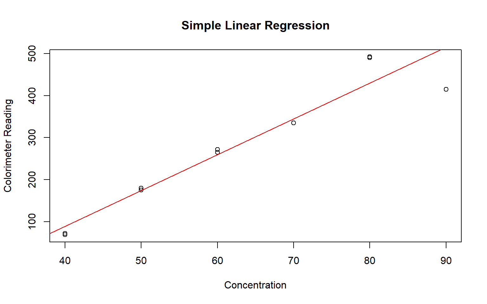

MH3510 Assignment 1
Question
The following data indicate the relationship between the amount of \(\beta\)-erythroidine in an aqueous solution and the colorimeter reading of the turbidity:
| Concentration | Colorimeter Reading |
|---|---|
| 40 | 69 |
| 50 | 175 |
| 60 | 272 |
| 70 | 335 |
| 80 | 490 |
| 90 | 415 |
| 40 | 72 |
| 60 | 265 |
| 80 | 492 |
| 50 | 180 |
Fit a simple regression to the data.
Comments on the model adequacy using \(\mathcal{F}\) test and \(\mathcal{R}^2\) statistics.
Solution
Data Preparation
We saved the data in data/data.csv. Then we named the
columns as \(X\) and \(y\).
## X y
## 1 40 69
## 2 50 175
## 3 60 272
## 4 70 335
## 5 80 490
## 6 90 415Simple Linear Regression
We first fit the simple linear regression model using the
lm function.
##
## Call:
## lm(formula = y ~ X, data = data)
##
## Residuals:
## Min 1Q Median 3Q Max
## -100.312 -15.080 3.203 10.880 61.978
##
## Coefficients:
## Estimate Std. Error t value Pr(>|t|)
## (Intercept) -252.2971 58.7508 -4.294 0.00264 **
## X 8.5290 0.9153 9.318 1.43e-05 ***
## ---
## Signif. codes: 0 '***' 0.001 '**' 0.01 '*' 0.05 '.' 0.1 ' ' 1
##
## Residual standard error: 48.09 on 8 degrees of freedom
## Multiple R-squared: 0.9156, Adjusted R-squared: 0.9051
## F-statistic: 86.83 on 1 and 8 DF, p-value: 1.434e-05We can see that the estimated regression line is
\[\hat{y} = -252.2971 + 8.5290X\]
with \(\mathcal{F}\approx 86.829\), \(p\approx 1.434\times {10}^{-5}\) and \(\mathcal{R}^2\approx 0.9156\).
We can plot the data and the regression line to check if we are correct.
plot(data$X, data$y,
xlab = "Concentration", ylab = "Colorimeter Reading",
main = "Simple Linear Regression")
abline(model, col = "red")
We can also calculate the regression coefficients manually.
We can calculate \(\overline{x}\), \(\overline{y}\) first.
## X_bar = 62
## y_bar = 276.5Then we calculate \(S_{xx}\), \(S_{xy}\) and \(S_{yy}\) by:
\[ \begin{aligned} S_{xx} &= \sum_{i=1}^{n} (x_i - \overline{x})^2\\ S_{xy} &= \sum_{i=1}^{n} (x_i - \overline{x})(y_i - \overline{y})\\ S_{yy} &= \sum_{i=1}^{n} (y_i - \overline{y})^2 \end{aligned} \]
S_xx <- sum((data$X - X_bar)^2)
S_xy <- sum((data$X - X_bar) * (data$y - y_bar))
S_yy <- sum((data$y - y_bar)^2)
cat(paste("S_xx =", S_xx, "\nS_xy =", S_xy, "\nS_yy =", S_yy))## S_xx = 2760
## S_xy = 23540
## S_yy = 219270.5Then we can calculate the \(\hat{\beta}_1\) and \(\hat{\beta}_0\) by:
\[ \begin{cases} \hat{\beta}_1 = \frac{S_{xy}}{S_{xx}}\\ \hat{\beta}_0 = \overline{y} - \hat{\beta}_1\overline{x} \end{cases} \]
beta_1 <- S_xy / S_xx
beta_0 <- y_bar - beta_1 * X_bar
cat(paste("beta_1 =", beta_1, "\nbeta_0 =", beta_0))## beta_1 = 8.52898550724638
## beta_0 = -252.297101449275So we can write
\[ \hat{y}=-252.2971 + 8.5290X \]
Which is the same as the result from lm function.
ANOVA Table
It is easy to see the \(\mathcal{F}\) statistic and \(\mathcal{R}^2\) statistic from the
summary function. We can also calculate them manually.
We can calculate \(\mathrm{SSR}\) and \(\mathrm{SSE}\) by:
\[ \begin{aligned} \mathrm{SSR} &= \sum_{i=1}^{n} (\hat{y}_i - \overline{y})^2\\ \mathrm{SSE} &= \sum_{i=1}^{n} (y_i - \hat{y}_i)^2 \end{aligned} \]
y_hat <- beta_0 + beta_1 * data$X
SSR <- sum((y_hat - y_bar)^2)
SSE <- sum((data$y - y_hat)^2)
cat(paste("SSR =", SSR, "\nSSE =", SSE))## SSR = 200772.31884058
## SSE = 18498.1811594203And
\[ \begin{aligned} \mathrm{MS}_{\mathrm{Reg}}&=\mathrm{SSR}\\ s^2&=\frac{1}{n-2}\mathrm{SSE} \end{aligned} \]
## MS_Reg = 200772.31884058
## s^2 = 2312.27264492754After that, we can obtain the \(\mathcal{F}\) statistic by
\[ \mathcal{F} = \frac{\mathrm{MS}_{\mathrm{Reg}}}{s^2} \]
## F = 86.8289988557434So we can calculate the \(p\)-value for \(\mathcal{H}_0\) is \(\beta_1=0\) is
\[ p=\mathbb{P}\left(X, y\mid \beta_1=0\right) = \int_{\mathcal{F}}^{+\infty} F_{1, 8}(f)\mathrm{d}f \approx 1.434\times {10}^{-5} \]
## p = 1.43437158113269e-05The \(p\) value is quite small, so we can reject the null hypothesis and say that there is a significant relationship between \(X\) (concentration) and \(y\) (colorimeter reading).
For \(\mathcal{R}^2\) statistic, we can calculate it by
\[ \mathcal{R}^2 = \frac{S_{xy}^2}{S_{xx}S_{yy}} \]
## R2 = 0.915637620384775So the \(\mathcal{R}^2\) statistic is about \(0.9156\). Which means that there is a strong linear relationship between \(X\) and \(y\).
Conclusion
For question (a), we have fitted a simple linear regression model to the data by:
\[\hat{y} = -252.2971 + 8.5290X\]
For question (b), we have tested the model adequacy using \(\mathcal{F}\) test and \(\mathcal{R}^2\) statistics. The \(\mathcal{F}\) statistic is \(86.829\) and the \(p\) value is \(1.434\times {10}^{-5}\), which means that there is a significant relationship between \(X\) and \(y\). The \(\mathcal{R}^2\) statistic is \(0.9156\), which means that there is a strong linear relationship between \(X\) and \(y\).